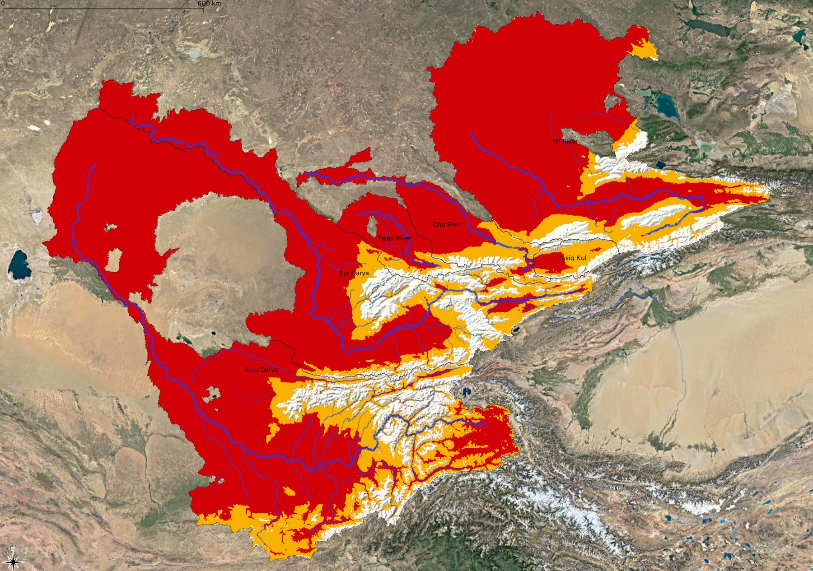

1 Hydrological Systems in Semi-Arid Central Asia
Here, we provide a tour d’horizon of key hydrological systems in Central Asia and highlight important aspects of this complex, yet fascinating domain which is shown in Figure 1.1. Note that from the hydrological perspective the region is defined to comprise the former Soviet Central Asia with Islamic Emirat Afghanistan. Source: Zoï Environment Network.
1.1 Regional Characteristics
Key statistics of the Central Asia region are shown in Table 1.2. Central Asia is spreading over approximately 4.6 million km2, including the territories of Kazakhstan, Kyrgyzstan, Tajikistan, Turkmenistan, Uzbekistan and the Afghan Islamic Emirate (Central Intelligence Agency, n.d.). Populations are very unevenly distributed as is shown in Figure 1.2. One of the key population hotspot is the densely populated Fergana Valley that is shared between Uzbekistan, Krygyzstan and Tajikistan.
| Country | Area [km2] | Population [Mio., 2018] | Pop. Density [Einw./km2] | GDP [Mio. USD, 2017] | Per Capita GDP [USD] |
|---|---|---|---|---|---|
| Kazakhstan | 2’724’900 | 18.3 | 6.3 | 160’839 | 8’780 |
| Kyrgyzstan | 199’950 | 6.3 | 29.7 | 7’061 | 1’120 |
| Tajikistan | 142’550 | 9.1 | 60.4 | 7’146 | 785 |
| Turkmenistan | 488’100 | 5.9 | 11.1 | 37’926 | 6’482 |
| Uzbekistan | 448’978 | 33.9 | 69.1 | 47’883 | 1’412 |
| Afghanistan | 652’864 | 32.9 | 50.4 | 21’657 | 658 |
| Total | 4’657’342 | 106.4 | 22.8 | 282’512 | 2’656 |
The average per capita annually renewable water availability is estimated to be around 1’500 m3. Thus, according to the United Nations definition, the region as a whole is water stressed. However, such regional view blends over significant differences between the upstream and downstream states and a more fine-grained per country water availability figures show the very uneven distribution of annually renewable water resources in a much clearer way (Figure 1.3).
In the vast plains that cover around 70 % of the total territory, there are only very few rivers which have scarcely any tributaries from the point they leave the mountain areas all the way to their mouth. Abundant solar radiation, high temperatures, small amounts of precipitation, a lack of humidity, unstable snow cover, slight slopes, geological structures etc., hinder the formation of surface flows in the plains of Central Asia, despite their big importance for the local agricultural production there. Only the largest rivers, such as Syr Darya, Amu Darya, and Ili are able to survive hundreds of kilometers of deserts and reach the most important landlocked reservoirs – the Aral Sea and Lake Balkhash (Shults 1965). The Aral Sea, of course, is no longer adequatly fed by the annual snow melt floods of the Syr Darya and Amu Darya and thus has gradually vanished over the second half of the 20th century (for more on this, see Section 1.4 below).
In fact, the inhomogeneity of the relief structure causes Central Asia to be the territory of immense contrasts Figure 1.4. Here, extreme aridity in the hot deserts of the plains and, only 100 km away, abundant humidity and snowfields in the mountains where precipitation levels can range between 1’000 mm/a up to 2’000 mm/a.
The uneven distribution of water bodies is striking (Figure 1.5). The mountains of Central Asia are riddled with an extremely branched river network consisting of more than ten thousand watercourses. These areas are called the zones of runoff formation.
In the flat foothill areas surrounding the mountain ranges, another branching river network is found which consists of irrigation channels, which do not contribute to the runoff of the core rivers, but rather divert the water from the river network and diffuse it in the irrigated oases where much of it gets evapotranspirated. Usually, these areas are referred to as zones of comples water distribution and use.
All Central Asian river basins are endorheic with no water draining out of the region but only evaporating back to the atmosphere. This emphasizes the importance of moisture transfer as an important mechanism in the region region since the formation of substantial watercourses in the mountains is followed by their complete dissipation in the plains, including in the irrigated oases and the terminal lakes, i.e. the Aral Sea and Lake Balkash (Shults 1965).
1.2 Climate
1.2.1 Sources of Moisture
In the boreal summer, tropical air masses form in the plains of Central Asia. At that time, even cold air masses coming from the north heat quickly. There is no possibility for temperature differences between the lower and the middle troposphere to occur which explains the horizontal uniformity of high temperatures during summer (Shults 1965).
Contrary to this, the temperature differences in the region are highest in January during the peak of the boreal winter. As the territory of Central Asia is unprotected from the north, it is under the influence of dry, exceptionally cold air masses originating from the Arctic region and Siberia. These air masses can cause sharp frosts. The further the Siberian or Arctic air masses penetrate towards the west and the south, the more their temperature increase. This explains the big difference in air temperatures during winter between the north and the south of Central Asia. Cold air intrusions are often accompanied by the influx of warm air from the tropics. The cold waves taking turns with hot air masses cause unsteady frost in the plains and, together with generally low precipitation values, do not allow for the formation of a significant snow pack there (Shults 1965).
As is discussed further below, the winter snow cover in the high mountain ranges plays an essential role in runoff formation in the spring and summer months and is thus of key relevant to irrigation agriculture in the downstream and for hydropower production (see Section 1.3 below). Understanding the atmospheric mechanisms resulting in favorable conditions for winter precipitation is thus essential.
(Gerlitz et al. 2018) discusses how the position of the westerly jet stream is connected with the frontal trajectories and the westerly disturbances which are the main moisture sources if the region. The relative position of these planetary wave tracks and their associated westerly flows to the orographic mountain barriers plays thus a key role. The main precipitation events migrate over the winter season from south to north. The southern parts of central Asia, particularly the windward slopes of the Karakorum and Hindu Kush mountain ranges, receive high amounts of winter precipitation (December-January-February), which reaches up to 60 % of the total annual precipitation. During spring the zone of maximum precipitation migrates northward, reaches the Pamir plateau in March, and continues to Tien Shan in April/May. The interaction of tropical air masses from the Arabian Golf with westerly flow in Central Asia is another important moisture source for the region.
Using data of the ERA-Interim reanalysis, (Gerlitz et al. 2018) classifies 8 weather types (WT) based on typical regional pressure field patterns over a domain covering 20- 60N and 50- 90E. Like this, large-scale features of winter circulation patterns in Central Asia can be captured. WT are analyzed with regard to the spatial anomalies of temperature and precipitation. Figure 1.6 and Figure 1.7 show the results. In these Figures, the individual plates WT 1 - 8 are labeled according to the main circulation feature over Central Asia, i.e. a Rossby ridge (R) or trough (T). Acronyms in the figures indicate the major features (and their centers of action) for each WT: anti-cyclonic anomaly (AC), cyclonic anomaly (C), central Asia ([CA]), Kazakhstan ([KAZ]), Mongolia ([MON]), and Indian Ocean and Indian subcontinent ([Indic]).
Generally, it can be observed that configurations that are associated with a Rossby trough over Central Asia lead to an intensification of westerly moisture fluxes (WT 3, WT 7, and WT 8). If there is, however, a Rossby ridge type configuration as shown in WT 1, WT 2, and WT 4 panels of Figure 1.6 and Figure 1.7, moisture fluxes are northward-shifted and precipitation suppressed (Gerlitz et al. 2018).
1.2.2 Distribution of Precipitation
Precipitation is extremely unevenly distributed in the region. 20% of the plain area receives less than 100 mm, while 91% of the territory receives less than 300 mm of precipitation a year with an overall average of 173 mm. The mountains are thus an important climatological and hydrological factor, since they are the places where the water condensates and where the rivers and groundwater originate. Although the range of precipitation levels is wide (60 mm - 2’500 mm), the mountains receive on average more than three times more precipitation than the plains, and the low temperatures favor its accumulation in the solid state (Shults 1965). Figure 1.8 shows the precipitation climatology over the Central Asia domain
The influence of the relief is notable also when speaking of precipitation distribution during the year ( Figure 1.9 and Figure 1.10). The high ground areas in Central Asia are witnessing an almost even distribution of precipitation on monthly basis, whereas at the same time, in the inner parts of high mountain ridges there is more precipitation in summer. Such a distribution of precipitation in the inner parts of mountain ridges is a consequence of high condensation levels in summer due to intense evaporation taking place in snow melting areas or, less often, on water surfaces.
A typical example showing the influence of the local water vapor emission on annual distribution of precipitation could be the Issyk Kul Lake Basin. There the percentage of precipitation received during summer and the second half of spring, so from May to August, is sometimes reaching even 80% of the total annual precipitation amount, all thanks to the evaporation of the water from the lake and the emergence of thermal convection and subsequent moisture recycling.
The areas that are characterized by a predominant precipitation during summertime are the Central Tian Shan and Eastern Pamir, where the difference between the summer and the rest of the year is so big that during summer 60% of all annual precipitation is received.
The predominance of the precipitation during summer in case of mountains with steep slopes (15° - 30°) causes fast and abundant snowmelt runoff which is directed to the lower areas and then turns into a river network. Thanks to a large amount of precipitation, relatively low evaporation levels and steep slopes, all rivers of Central Asia, including the largest ones such as Amu Daria, Syr Daria, Ili or Zeravshan, arise in the mountains. Arising in the high ground area, these rivers are mainly fed by snow, glaciers and snow patches melting, as well as by groundwater that, again, were all formed by the same sources.
1.2.3 A Changing Climate
With a warming climate and the associated increase of evapotranspiration in the downstream plains and the loss of glacier storage in the mountainous areas, a solid understanding of the snow pack formation becomes even more pertinent. This is for example evidenced by the fact that a discernible reduction of snow cover can be observed in some key basins in the lower to medium elevations between 1980 - 2010. Figure 1.11 shows this in a exemplary fashion for the Chirchik River basin (see also Chapter Chirchik River Basin for more information).

1.3 Zone of Runoff Formation
Using the aridity index \(\phi\) for classification, the main zones of runoff formation are shown in Figure 1.12. The aridity index denotes the fraction of long-term precipitation, i.e. the total atmospheric water supply, divided by the long-term mean potential evapotranspiration which is the total atmospheric water demand (see also the Chapter Long-term Water Balance Modeling for more information).
Due to the presence of the vertical thermal gradient, the start of the positive air temperature season, and consequently, the start of the ice and snow melting season does not take place at the same time uniformly. Rather, the snow melting process is of protracted nature and the higher the mountains are in a particular catchment, the later the snow-melt floods take place on rivers that are emerging there.
The melting process starts last in the permanent snow and glaciers regions. Because of this, the rivers, which are fed by snowmelt in the upper parts of the catchment area, are of great importance for the irrigation of crop fields, since they are characterized by the most significant water runoff during July and August, at which point the irrigated plains experience severe drought and when irrigated crops have the highest water demand.
The rivers having this kind of a runoff regime (nivo-glacial) are Pyandzh and Vakhsh Rivers, as well as the ones deriving from them, such as Amu Darya, Chu, Zeravshan, Talas and Ili Rivers with its numerous tributaries. These rivers all feature a small variability of annual runoff. This is partly a result of the regulating effect of the zone of eternal snows and ice and is very important from the perspective of agricultural production in the downstream. These rivers are thus particularly valuable, not only for irrigation but also as a source of hydroelectric power. Figure 1.13 shows example hydrographs of such rivers.
Rivers originating from the low mountains but being fed mainly by the snowmelt (nival regime rivers), are characterized by the early floods (March-May) and a sharp variability of annual runoff, since the amount of water is almost entirely determined by the snow reserves in the mountains which were accumulated in the previous winter season. Figure 1.14 shows example hydrographs of such rivers.
Finally, the watercourses originating from the lowest parts of mountains or from low mountains, (nivo-pluvial regime rivers), which in comparison to other regimes receive much more liquid precipitation, are characterized by large amounts of water, often saturated by sediment, passing during short periods of time. These are so-called mudflows. These watercourses often dry up during summer because of a decrease in supplies from groundwater.
When entering the plains, the rivers of Central Asia form wide-spreading alluvial fans consisting of materials brought by them from the mountains. Here the rivers are usually divided into several channels, and a large part of water is filtered by these sediments. The large quantities of groundwater in these alluvial fans, which appear due to this process, mostly protrude from the earth surface at the edges these alluvial fans, causing the small rivers that are fed by groundwater, so-called Karasu rivers, to emerge, which are also used for irrigation.
The relief thus has an extremely strong and many-sided impact on runoff formation processes. This influence is mediated through climatic factors, on which the recharge of the rivers, as well as the processes of thawing of snow and ice, etc., depend. In this regard, both the average water content, consistency of the annual runoff and its distribution over a year, as well as other characteristics of the river runoff cannot be considered independently from key relief factors, first and foremost altitude. All this demands a careful and comprehensive analysis of the impact of the relief on runoff processes.
1.4 Zone of Water Distribution and Use
As in the case of the defintion of the zones of runoff formation (Section 1.3), one way to define the zones of complex water distribution and use is to use the definition of McVicar et al. (2012) to classify zones of high aridity in the following way
- \(\phi \ge 1.3\) and \(\phi < 3\): arid conditions
- \(\phi \ge 3\): hyperarid conditions

Comparing Figure 1.12 with Figure 1.15, it is evident that the bulk of the domain is either arid or hyperarid and that the mountains are the regions where the annually renewable water resources are formed. In fact, these humid regions resemble floating islands in a large sea of aridity.
It is for this reason not further astonishing that Central Asia is the home of some of the world’s largest irrigation systems (Figure 1.17). From the moment water leaves the mountaineous zones of runoff formation in rivers, water gets diverted into irrigation channels for its diversion to supply irrigated areas. In the low lands of Central Asia, it is for this reason impossible to talk about natural hydrology as man has engineered the hydrological landscape in its entirety with tens of thousands of kilometers of irrigation and drainage channels that in some instances even cross natural river basins.
For the interested readers about the history of these irrigation systems is provided by Peterson (2019). While the history of irrigation is dating back millennia in the region, the large scale push to extend irrigated areas beyond the historically established perimeters has happend during the Soviet era. It’s history is excellently recounted by Peterson (2019). As an example, Figure 1.16 shows archival footage from a Soviet propaganda film which shows in an impressive way the scale of the undertaking.
Nowadays, Uzbekistan has by far irrigates the largest area, i.e., almost half of the total irrigated area. Contrary to that, Tajikistan has the smallest fraction with only 7% of the total irrigated area on its territory. Almost one third of the total irrigated area is non-agricultural land including irrigated vegetation in cities and housegardens.
These data were derived with a unsupervised classification approach using Google Earth Engine and vast amounts of remotely sensed data (Ragettli, Herberz, and Siegfried (2018)). The interannual variability of irrigated area is smaller than 5% between 2016 - 2020. This means that despite climate variability, the irrigation system is well buffered against below normal water years. This certainly also has to do with the fact that there are a large number of decadal to seasonal regulators/reservoirs that can buffer water supply variability to a certain extent.
The main planted crops in the region for the year 2020 are shown in Figure 1.19. This figure is also derived from remotely senses data and shows the crop disaggergated irrigated land (Source: hydrosolutions GmbH).
1.5 Regional Water Balance
It is instructive to show the opposite hydrological functions of mountain (zone of runoff formation) versus flat areas (zone of complex water distribution and use) of Central Asia by means of simple water balance considerations (Shults (1965)).
The water balance equation for mountain area, broadly defined, can be written as follows:
\[ p = e + q_{s} + q_{g} \qquad(1.1)\]
whereby \(p\) represents the average long-term amount of precipitation and condensation of water vapor from the atmosphere, \(e\) the average long-term evaporation, \(q_{s}\) the average long-term surface outflow and \(q_{g}\) the average outflow of groundwater. This equation shows that the mountain area receives moisture only from the atmosphere and rainfall which precipitates within its limits and evaporates only partially. The remainder part of it flows down in the form of surface and underground drainage. Sharp partition of a relief in the mountain area, and consequently, a deep natural drainage is the reason why groundwater is almost entirely connected to the river network already in the mountain area. The Meso-Cenozoic deposits, containing waterproof horizons, and the Paleozoic massifs on the border with the flat areas obstruct groundwater flows. Thus, the groundwater inflow to the flat areas makes no more than 10% - 15% of the surface one and therefore it can be neglected in the first equation.
Then the water balance equation will have the following appearance:
\[ p = e + q_{s} \qquad(1.2)\]
Based on available data, the rate of surface outflow \(q_{s}\) can be calculated quite precisely: 155 billion m3 or 201 mm annually. River basin-specific surface runoff values are provided in Table. It is impossible to measure the amount of the accumulated water vapor in the mountains accurately just by observation, so we have to proceed from the rate of the runoff, for which we need to know the value of runoff coefficient. The last can be approximately considered as equal to 0.35 (see also next Section). Then, \(p\) equals 575 mm and \(e\), as follows, 575 mm - 201 mm = 374 mm.
| Basin Name | Area (km2) | Runoff (m3/s) | Runoff entering flatlands (m3/s) | Runoff Coeff. (l/ (s km2)) |
|---|---|---|---|---|
| Caspian Sea | 29’700 | 22 | 12 | 0.74 |
| Endhoreic Basins of TUK and AFG | 193’300 | 180 | 155 | 0.93 |
| Amu Darya | 227’300 | 2’500 | 2’500 | 11 |
| Syr Darya | 150’100 | 1’200 | 1’200 | 8 |
| Chu and Talas River Basin | 37’540 | 190 | 190 | 5.1 |
| Lake Issyk Kul | 12’600 | 115 | - | 9.1 |
| Southern Balkash Lake | 119’000 | 800 | 800 | 6.7 |
| Total | 769’600 | 5’007 | 4’857 | 6.5 |
It should be noted that the rate of surface water inflow to the flatlands is smaller than the runoff which is generated in the mountain areas as part of it is utilized in the mountain area for irrigation purposes (the rivers of Turkmenistan are in this regard an especially good example), or it evaporates from a surface like of the Lake Issyk Kul and other smaller lakes.
The equation of water balance for the flat area can be written in the form of
\[ p + q_{i} = e \] {eq-regional-wb-3}
where \(q_{i}\) represents the surface inflow of water.
We neglect underground outflow in the flat area as, even when it takes place, it is absolutely insignificant. The average amount of rainfall calculated by planimetering of the isohyetal map is equal to 173 mm. The rate of inflow of water is equal to the outflow of water from mountain area, i. e. \(q_{s} = q_{i} = 155 \cdot 10^{9} \text{ m} ^{3}\). After making its way down to the flat area, which includes the surface of the Aral Sea and Lake Balkhash, the surface inflow of the rivers reaches 124 mm and the evaporation is \(e = p + q_{i} = 173 \text{ mm} + 124 \text{ mm} = 297 \text{ mm}\). It is noteworthy to mention that from the entire moisture appearing in the flat area, 58% nevertheless is from atmospheric precipitation, despite its rather insignificant absolute amount.
Comparing the two water balance equations shows that the mountain areas receive 575 mm of moisture from the atmosphere of which 374 mm evaporates back to the atmosphere and 201 mm reach the downstream flat area in the form of a surface runoff. Conversely to this, the flat areas receive 297 mm of water from direct precipitation and from inflow of mountain runoff. All of this water evaporates back to the atmosphere.
To summarize, it is clear that in the area of runoff formation, \(p > e\), in the area of runoff losses \(p < e\), and that in the area of runoff balance \(p\approx e\). In each area where the runoff processes show the same orientation, its origin, distribution in time and space, and also the intensity of processes can however vary. In this sense, depending mainly on local topography (generally speaking, depending on the altitude, orientation and exposure of a reservoir to humid air masses), the specific runoff, the persistence of the annual runoff and its distribution over a year, as well as other characteristics of the river flow can sharply differ in different parts of the area of runoff formation, as it was already discussed above. On the other hand, the intensity of runoff losses, their distribution over a year, etc. within the area of runoff losses, considerably depend on the economic activities and features of climatic conditions.
1.6 References
Central Intelligence Agency. n.d. “The World Factbook 2020.” https://www.cia.gov/library/publications/resources/the-world-factbook/index.html.
Gerlitz, Lars, Eva Steirou, Christoph Schneider, Vincent Moron, Sergiy Vorogushyn, and Bruno Merz. 2018. “Variability of the Cold Season Climate in Central Asia. Part I: Weather Types and Their Tropical and Extratropical Drivers.” Journal of Climate 31 (18): 7185–7207. https://doi.org/10.1175/jcli-d-17-0715.1.
GRDC, Koblenz, Germany: Federal Institute of Hydrology (BfG). 2020. “Major River Basins of the World / Global Runoff Data Centre, GRDC. 2nd, Rev. Ext. Ed.” Shape.
International Earth Science Information Network - CIESIN - Columbia University, Center for. 2018. “Gridded Population of the World, Version 4 (GPWv4): Population Density Adjusted to Match 2015 Revision UN WPP Country Totals, Revision 11.” Palisades, NY: NASA Socioeconomic Data; Applications Center (SEDAC). https://doi.org/10.7927/H4F47M65.
Karger, Dirk Nikolaus, Olaf Conrad, Jürgen Böhner, Tobias Kawohl, Holger Kreft, Rodrigo Wilber Soria-Auza, Niklaus E. Zimmermann, H. Peter Linder, and Michael Kessler. 2017. “Climatologies at high resolution for the earth’s land surface areas.” Scientific Data 4 (1): 170122. https://doi.org/10.1038/sdata.2017.122.
Karger, Dirk Nikolaus, Dirk R. Schmatz, Gabriel Dettling, and Niklaus E. Zimmermann. 2020. “High-resolution monthly precipitation and temperature time series from 2006 to 2100.” Scientific Data 7 (1): 248. https://doi.org/10.1038/s41597-020-00587-y.
Karger, Dirk Nikolaus, Adam M. Wilson, Colin Mahony, Niklaus E. Zimmermann, and Walter Jetz. 2021. “Global daily 1 km land surface precipitation based on cloud cover-informed downscaling.” Scientific Data 8 (1): 307. https://doi.org/10.1038/s41597-021-01084-6.
Lehner, B., and Grill G. 2013. “Global River Hydrography and Network Routing: Baseline Data and New Approaches to Study the World’s Large River Systems.” Hydrological Processes 27 (15): 2171–86.
McVicar, Tim R., Michael L. Roderick, Randall J. Donohue, Ling Tao Li, Thomas G. Van Niel, Axel Thomas, Jürgen Grieser, et al. 2012. “Global Review and Synthesis of Trends in Observed Terrestrial Near-Surface Wind Speeds: Implications for Evaporation.” Journal of Hydrology 416-417: 182–205. https://doi.org/https://doi.org/10.1016/j.jhydrol.2011.10.024.
Mulligan, Mark, Arnout van Soesbergen, and Leonardo Sáenz. 2020. “GOODD, a Global Dataset of More Than 38,000 Georeferenced Dams.” Scientific Data 7 (1): 31. https://doi.org/10.1038/s41597-020-0362-5.
“NASA Shuttle Radar Topography Mission (SRTM)(2013).” 2013. NASA. https://earthdata.nasa.gov/learn/articles/nasa-shuttle-radar-topography-mission-srtm-version-3-0-global-1-arc-second-data-released-over-asia-and-australia.
Peterson, Maya K. 2019. Pipe Dreams: Water and Empire in Central Asia’s Aral Sea Basin. Cambridge University Press.
Ragettli, Silvan, Timo Herberz, and Tobias Siegfried. 2018. “An Unsupervised Classification Algorithm for Multi- Temporal Irrigated Area Mapping in Central Asia.” Remote Sensing 10 (11): 1823. https://doi.org/10.3390/rs10111823.
Shults, Victor. 1965. Rivers of Middle Asia. 2nd Edition. Gidrometeoizdat, Leningrad.